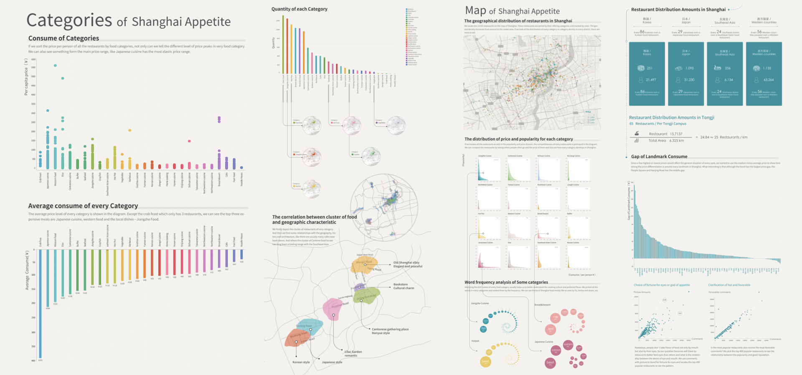

返 回
这是在同济大学设计创意学院，由意大利副教授Francesca指导的“数据可视化”课程项目。我们小组选取了Taste为主题，爬取美团（餐馆名称，点评数，地理位置，食品评论）等相关数据，并进行可视化分析，总结出具有上海风味的区域。 我主要负责数据整理，可视化实现及分析，图表绘制。
上海口味“数据可视化”（点击查看PDF）
上海被称为魔都，每天都有成千上万的欲望，其中最必要和多样化的是饮食。如今的饮食不仅为了应对饥饿，也成为一种娱乐形式。由此，我们想探究饮食数据，探讨食物和人文的结合。
经过多年发展，美团点评已成为中国最大的本地化生活信息提供者，其中用户生成的内容，如对餐饮服务的评价是占据主要部分。人们如今已习惯用美团点评来寻找合适的餐厅。 因此，我们选择从上海18个地区的12150家餐厅爬取公开信息，以探索其相关性及与潜在关系。在上海这12150家餐厅中，在Tableau中进行可视化，每一个点代表一个餐厅，颜色表示为不同风味，结合地图表示其地理位置。可视化呈现出其数据密度由周围到中心区域增加。